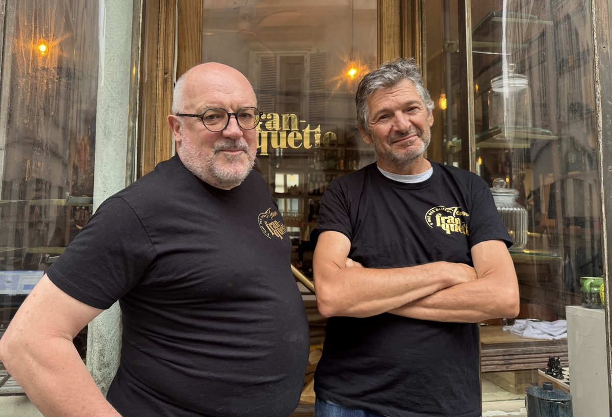

French tapas · natural & orange wines
Tuesday–Saturday from 7:30pm

In a former candy shop turned cabinet of curiosities, 100 metres from Place de Clichy, Franquette creates cosmopolitan sharing plates: products that are good, clean and fair, in the spirit of Slow Food.
In the cellar: organic, biodynamic and natural wines, from grower friends!
In the kitchen, it’s chef Jacques, back from the Americas. Chef and owner of Jac Bistro in São Paulo, he brings a Brazilian touch to Franquette’s cooking. A very old friend of Philippe’s — from school, flat-sharing, or travelling the world together, from Guyana to Guinea via Turkmenistan, to name only the funniest stops.
Book now8 rue des Dames
75017 Paris
Directions
Tuesday – Saturday
From 7:30pm